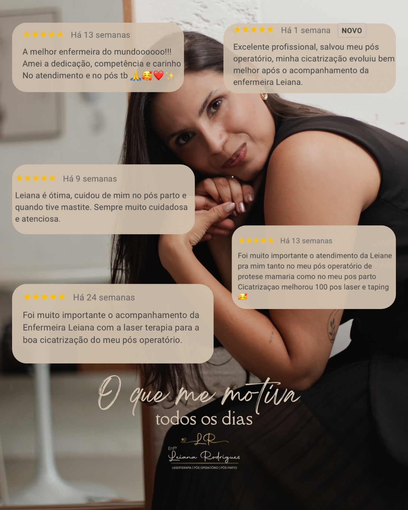

Sou a Leiana. Há mais de 12 anos cuido de pessoas nos momentos mais delicados da vida: a recuperação de uma cirurgia e a chegada de um bebê. Se você está com medo de complicações ou sem saber se o seu pós está normal, eu conduzo o seu cuidado com segurança e leveza.

Sou enfermeira, mãe e mulher. Vivo a enfermagem nos dois mundos: no hospital, cuidando de crianças em um dos centros pediátricos mais respeitados do Distrito Federal, e nas casas das minhas pacientes, acompanhando recuperações e acolhendo mães recém-chegadas à maternidade. Eu sei o que é estar exausta, com medo e precisando de alguém que saiba o que fazer. É exatamente esse alguém que eu escolhi ser.
Cada corpo tem o seu tempo. Meu trabalho é acompanhar o seu, com técnica de hospital e carinho de casa.
Avaliação, curativos especializados e acompanhamento completo da cicatrização, no conforto da sua casa.
Acolhimento e segurança para a mãe: cuidados físicos, orientação prática e atenção aos sinais de alerta, como a mastite.
Recuperação mais confortável e cuidado estético da cicatriz, do pós-operatório ao pós-parto.
Bandagens funcionais que aliviam, sustentam e aceleram o seu bem-estar durante a recuperação.
Procedimentos estéticos com responsabilidade clínica e olhar de quem entende de pele, cicatriz e saúde.
Para bebês, crianças e adultos: técnica segura, ambiente tranquilo e zero pressa. Um momento delicado tratado com a delicadeza que merece.
Orientação especializada de enfermagem para pacientes e famílias que atravessam o tratamento oncológico.
Informação de quem cuida todos os dias. Estas são as dúvidas que mais chegam até mim, respondidas com calma e sem susto.
Repouso não é luxo, é parte do tratamento. Hidratação, alimentação leve e atenção aos pontos. E na dúvida sobre qualquer sinal diferente, pergunte antes de se assustar.
A alimentação certa acelera a cicatrização. Proteínas, água e orientação individual fazem mais pela sua recuperação do que qualquer pressa.
Esse é um dos mitos mais perigosos. Curativo certo, no tempo certo, com avaliação profissional: é assim que uma cicatriz evolui bem.
Em 25 dias uma cicatrização pode mudar tudo. O laser reduz desconforto e ajuda a pele a se reorganizar. Acompanho cada evolução com registro fotográfico.
Desconforto inicial existe, dor persistente não. Mastite tem sinais claros e tratamento. Quanto antes você pedir ajuda, mais leve fica.
Se há curativo para trocar, dreno para cuidar, dúvida sobre a evolução ou simplesmente insegurança: esse já é o momento. Cuidado preventivo evita complicação.
A laserterapia usa luz de baixa intensidade para reduzir inflamação, aliviar desconforto e estimular a reorganização da pele, sem calor excessivo e sem corte. O Kinesio Taping são bandagens elásticas aplicadas de forma estratégica para sustentar a região, reduzir edema e melhorar a circulação local. Uso os dois porque se complementam: o laser age na célula, o tape age na função. Juntos, tornam a recuperação mais confortável e mais previsível.
Normal: leve vermelhidão nas bordas nos primeiros dias, pequena secreção clara ou rosada, sensação de tensão e coceira enquanto a pele se reorganiza. Atenção imediata: calor intenso na região, secreção purulenta ou com odor, febre acima de 37,8 °C, bordas se abrindo ou inchaço progressivo. Na dúvida, mande uma foto antes de se preocupar. É exatamente para isso que estou aqui.
Conteúdo novo toda semana no @enf.leiana
Alguns registros mostram a evolução de feridas, cicatrizes, edema e recuperação. Abra apenas se esse tipo de imagem fizer sentido para você neste momento.
Registros reais devem ser escolhidos com curadoria antes da versão final, preservando contexto, consentimento e sensibilidade de quem vai ver.
A seleção final deve mostrar recuperação, prevenção de intercorrências e cuidado com o resultado, sem expor contexto pessoal desnecessário.
Exemplo de caso em que o acompanhamento começa cedo para reduzir ansiedade, orientar sinais e proteger a evolução da cicatriz.
Registro publicado para mostrar que recuperação tem fases. A avaliação profissional ajuda a diferenciar evolução esperada de sinal de alerta.
A seleção final dessas imagens deve ser validada antes de publicar para preservar contexto, consentimento e sensibilidade.
"Amei a dedicação, competência e carinho no atendimento."
Depoimento em curadoria · publicação original será validada antes da versão final"Minha cicatrização evoluiu melhor depois do acompanhamento."
Depoimento em curadoria · publicação original será validada antes da versão final"Foi muito importante ter uma profissional acompanhando cada etapa."
Depoimento em curadoria · publicação original será validada antes da versão final"Atendimento cuidadoso, humano e seguro no momento em que mais precisei."
Depoimento em curadoria · publicação original será validada antes da versão finalPreencha seus dados e siga pelo WhatsApp com uma mensagem organizada. Assim a conversa já começa com o cuidado que você precisa.
Ao continuar, seus dados serão usados apenas para iniciar o atendimento e entender qual cuidado faz sentido para o seu momento.
Suas informações foram organizadas. O próximo passo é continuar pelo WhatsApp para a Leiana entender o seu momento e orientar o melhor cuidado.
Falar com a LeianaMe chama no WhatsApp, me conta como você está, e a gente decide juntas o melhor cuidado para o seu momento.
Atendo em todo o Distrito Federal: Brasília, Asa Sul, Asa Norte, Lago Sul, Sudoeste, Noroeste e Cruzeiro, além de Guará, Águas Claras, Vicente Pires, Taguatinga, Samambaia, Ceilândia, Riacho Fundo, Núcleo Bandeirante, Candangolândia, Park Way, Gama, Santa Maria, Recanto das Emas, e também Valparaíso de Goiás e Novo Gama.
Atendimentos em domicílio, maternidades, hospitais e consultórios parceiros, mediante agendamento prévio.